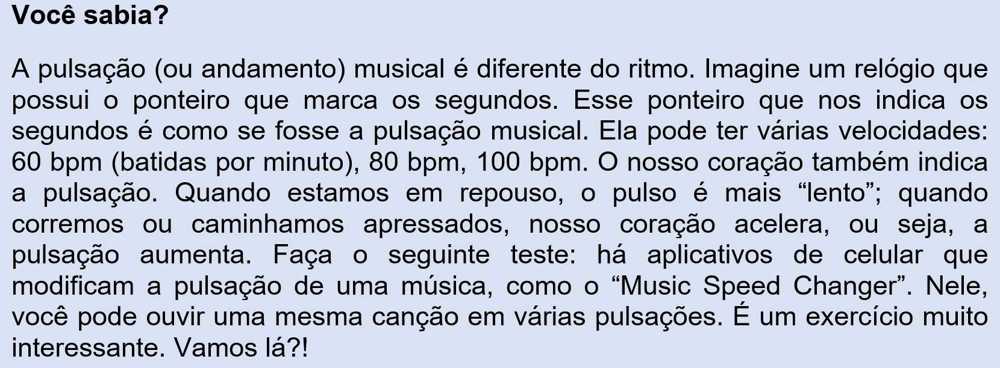

Capítulo 4: A música e a indústria metalúrgica
Questão-problema:
No seu trabalho há música?
Qual a diferença entre o som de uma fábrica e o som de uma música?
A música é capaz de produzir sensações em nosso corpo e mente?
Escute a seguinte obra de Heitor Villa Lobos, acessando o link:
A composição ouvida é de autoria de Heitor Villa-Lobos, maestro e compositor brasileiro. A obra, é parte integrante da peça Bachianas Brasileiras nº 2. Regente: Roberto Minczuk. Orquestra Sinfônica Brasileira.
Ao ouvir a obra, que sensação você teve? Algo em movimento? Reflita sobre isso.
Assista ao vídeo que trata do ritmo existente no nosso dia a dia.
FOLI (there is no movement without rhythm) original version by Thomas Roebers and Floris Leeuwenberg
FOLI (não há movimento sem ritmo). Versão original de Thomas Roebers e Floris Leeuwenberg
Dedicated to the people of Baro. Please share.
Life has a rhythm, it's constantly moving. The word for rhythm (used by the Malinke tribes ) is FOLI. It is a word that encompasses so much more than drumming, dancing or sound. It's found in every part of daily life. In this film you not only hear and feel rhythm but you see it. It's an extraordinary blend of image and sound that feeds the senses and reminds us all how essential it is.
Dedicado ao povo de Baro. Por favor compartilhe.
A vida tem um ritmo, está em constante movimento. A palavra para ritmo (usada pelas tribos Malinké) é Foli. É uma palavra que significa muito mais que tocar um tambor, uma dança ou um som. Se encontra em cada parte da vida cotidiana. Neste video, não apenas se escuta e se sente o ritmo, mas também podemos vê-lo. É uma extraordinária mistura de imagem e sons que alimenta os sentidos e nos lembra o que é essencial.
By the brothers Thomas Roebers and Floris Leeuwenberg Film crew during one month in Baro, Guinee Afrika. Beautiful sound recording and sound design Bjorn Warning Translator and Rhythm specialist Thomas Bonekamp With special thanks to the chief: DJEMBEFOLA |: Mansa Camio info@thomasroebers.com
Reconstruindo conhecimentos:
Música é a arte de se expressar por meio dos sons e de combiná-los. O som é a matéria-prima da música. Um compositor, ao escrever uma música, utiliza os sons de acordo com sua inspiração e até mesmo de acordo com regras existentes na música. Mas essas regras podem ser, por vezes, desconsideradas. Tudo dependerá da criatividade do compositor. A música possui três elementos fundamentais: o ritmo, a harmonia e a melodia. O ritmo, se caracteriza pela combinação e duração do tempo em que as notas musicais ficarão soando; a harmonia são duas ou mais notas que são tocadas simultaneamente; a melodia – talvez o elemento mais difícil de explicar, mas ao mesmo tempo o mais encantador – é a combinação de notas musicais, uma após a outra, composta de acordo com a inspiração do compositor. Por vezes, a melodia não sai da nossa cabeça. Você certamente passou ou passa por essa experiência. Quantas músicas parecem não “desgrudar” da nossa mente? Qual música está “tocando” na sua cabeça agora? Esse é o poder da música ou da “arte de combinar os sons”.
Como combinar então os sons produzidos pela indústria? Pensemos na indústria metalúrgica...há instrumentos musicais produzidos com metais, como as liras (instrumento cujas placas de metal de tamanhos diferentes produzem notas musicais distintas) ou ainda os instrumentos como o trombone e o trompete que produzem som através da passagem de ar por tubos e pela vibração dos lábios. Todos esses instrumentos dados como exemplo, utilizam o metal como matéria-prima.
Pesquise sobre os instrumentos de metal.
Quais deles estão presentes na música popular ou nas orquestras?
De que forma a indústria contribui para o desenvolvimento da música?
Kurt Pahlen (1907-2003), maestro, compositor e um dos maiores eruditos do século XX, afirma que “A música é velha como a humanidade...Contudo, a sua história é de fato a mais curta e nova. Possuímos monumentos de bronze e de pedra que nos testemunham culturas desaparecidas, e poesias, lendas, filosofias de milhares de anos pelas quais podemos formar uma imagem espiritual das épocas passadas. Apenas com a música a coisa é diferente. Nenhum som nos vem das culturas mortas”.
Fonte: História Universal da Música. Melhoramentos, 1963.
Conforme o antropólogo Rafael de Menezes, da Universidade Federal de Santa Catarina (UFSC) “as primeiras músicas compostas pelo ser humano acompanhavam danças ligadas a cerimônias religiosas”.
Fonte: http://generosmusicais71c.blogspot.com.br/2012/04/desenvolvimento-do-projeto-generos.html
A autora Vera Pessagno Bréscia, cita em seu livro “Educação Musical: bases psicológicas e ação preventiva, algumas teorias que falam sobre o surgimento da música. Ela cita, dentre vários exemplos, o fato do homem primitivo ter a necessidade de se comunicar com a natureza e, para isso, imitava os sons do ambiente que o cercava (como o canto dos pássaros, ventos nas folhas de árvores e trovões). Desse modo, o homem primitivo pensava estar se “comunicando” com a natureza. A autora também cita a teoria de Gaston, a qual diz que a música surgiu em nosso planeta através da “mãe primitiva” que, na ânsia de acalmar o seu bebê, entoava sílabas que assumiam características de uma canção de ninar.
Fonte: BRÉSCIA, Vera Lúcia Pessagno. Educação Musical: bases psicológicas e ação preventiva. São Paulo: Átomo, 2003.
A música é uma manifestação artística e cultural de um povo, em determinada época ou região. A música é um veículo usado para expressar os sentimentos. Ela evoluiu através dos séculos, resultando numa grande variedade de ritmos, entre eles, a música sacra ou religiosa, a erudita ou clássica, a popular e a tradicional ou folclórica.
A base da música é o ritmo. O ritmo é acompanhado pela pulsação. Como já vimos, a música é a combinação de ritmo, harmonia e melodia. No sentido amplo é a organização temporal de sons e silêncios (pausas). No sentido restrito, é a arte de coordenar e transmitir efeitos sonoros, harmoniosos e esteticamente válidos, podendo ser transmitida através da voz ou de instrumentos musicais.
Podemos supor que antes de existir qualquer tipo de tambor, as pessoas dançavam marcando a pulsação batendo o pé e/ou ao som de palmas. Sons são vibrações produzidos por um corpo qualquer, transmitidas através de ondas propagadas em frequências regulares ou não, captadas pelo sistema auditivo e interpretadas pelo cérebro.

Os sons que escutamos no dia a dia são bastante diferentes uns dos outros. Que tipos de sons nosso ouvido pode distinguir? Você já pensou nos tipos de sons que existem na indústria? Quantos decibeis eles produzem? São sons musicais ou ruídos?
Podemos chamar de música descritiva aquela na qual o compositor – inspirando-se em diferentes sons, seres ou ambientes naturais – os descreve através de sons musicais. São músicas que sugerem imagens e nos levam a formar representações mentais (canto de pássaros, ruído de trovão, murmúrios do vento, marulhar das ondas, gotejar da chuva, tempestade).
Entry Of The Gladiators - Julius Fucik
O Voo das Abelhas - Rimsky-Korsakov
As aventuras de Till e Sinfonia dos Alpes - Richard Strauss
Aprendiz de Feiticeiro - Paul Dukas
As Quatro Estações - Vivaldi
Clair de Lune - Claude Debussy
Som é vida que vibra. É tudo o que escutamos por meio da vibração de corpos elásticos. Seguem alguns conceitos importantes para melhor compreensão da música.
Densidade – depende da quantidade de sons escutados simultaneamente. Ao se ouvir uma significativa quantidade simultâneas de timbres, costumamos dizer que a música possui grande densidade sonora. Nas obras descritas acima, podemos diferenciar quais delas têm mais ou menos densidade uma em relação a outra.
Fonte:http://www.educadores.diaadia.pr.gov.br/modules/debaser/singlefile.php?id=17045 (Exemplo de densidade)
Qualidades do som ou parâmetros do som
Altura, Duração, Intensidade e Timbre: Todos os sons, ao serem emitidos, possuem essas quatro qualidades. Quando falamos, quando tocamos um instrumento musical ou quando ouvimos um ruído, por exemplo, inevitavelmente temos altura, intensidade, timbre e duração.
*Altura – Define se os sons são graves, médios ou agudos.
Fonte:http://www.educadores.diaadia.pr.gov.br/modules/debaser/singlefile.php?id=17044
*Duração – Define se os sons são curtos ou longos. Na música, a duração pe representada pelo ritmo e pelas figuras de ritmo expressas na pauta musical ou pentagrama. Pode-se dizer que é o tempo que o som está presente em nosso sistema auditivo.
Fonte:http://www.educadores.diaadia.pr.gov.br/modules/debaser/singlefile.php?id=17046
*Intensidade – São sons fortes ou fracos. Comumente dizemos de forma equivocada que o som está muito alto ou muito baixo. Na verdade, os sons quando estão “altos”, estão fortes; quando estão “baixos”, estão fracos. Não confunda: sons altos e baixos estão relacionados à qualidade da altura dos sons e não à intensidade. O correto é sempre dizer que o som está forte demais ou fraco demais. Pensemos numa situação cotidiana: muitas vezes pedimos para baixar o volume da TV, da música que toca no computador ou no celular. O correto é pedir para diminuir a intensidade do som que está sendo executado.
Fonte:http://www.educadores.diaadia.pr.gov.br/modules/debaser/singlefile.php?id=17042
*Timbre – É a cor do som. É a qualidade da fonte que gera o som. O timbre pode ser parecido, mas nunca é igual. É o som característico de cada voz ou instrumento musical. Como distinguimos o som de um carro do som de um caminhão? Por meio do som deles, ou seja, através do timbre.
Fonte:http://www.educadores.diaadia.pr.gov.br/modules/debaser/singlefile.php?id=17041
Os instrumentos musicais possuem características diferentes uns dos outros. Por isso são tocados de maneiras diferentes. Os instrumentos podem ser de corda, sopro ou percussão. As cordas podem ser dedilhadas ou percutidas (no caso do piano). Os instrumentos de sopro podem ser madeiras ou metais. Alguns instrumentos de percussão podem ser também sacudidos, como o caxixi por exemplo. Os instrumentos musicais são organizados por famílias. Os instrumentos de corda, pertencem à família dos cordofones; os de sopro pertencem à família dos aerofones; os tambores, pertencem à família dos membranofones; os instrumentos elétricos, como o teclado, à família dos eletrofones. E instrumentos como o caxixi e o reco-reco, à família dos idiofones.
Instrumentos de corda – cordofones: violino, guitarra e violão.
Instrumentos de percussão – membranofones: bateria, pandeiro e surdo.
Instrumentos de sopro – aerofones: flauta, trombone, trompete
Instrumentos elétricos – eletrofones: teclado musical, guitarra (apesar de ser um cordofone, também é um eletrofone, pois depende de uma caixa amplificadora ligada à energia elétrica).
Instrumentos de percussão – idiofones: o som é produzido pelo próprio corpo do instrumento como o caxixi, reco-reco, afoxé, carrilhão.
Uma orquestra
OSPA – Orquestra Sinfônica de Porto Alegre no Auditório Araújo Vianna – concerto de Música Instrumental Gaúcha em julho de 2017.
Os sons do Hermeto
Conhecido como “Mago” ou “Bruxo”, Hermeto Paschoal talvez seja o maior gênio em atividade na música universal. Multi-instrumentista autodidata, aprendeu a tocar gaita de oito baixos aos oito anos de idade. Sempre sozinho aprendeu a tocar vários instrumentos, inclusive o piano. Sua grande especialidade é tirar som de qualquer tipo de objeto ou material, especialmente do próprio corpo.
Vamos assistir?
Praticando:
Que músicas você escuta?
Analise as músicas que seguem, considerando os elementos como: densidade e timbre. Escute os instrumentos e identifique se eles são de sopro, de corda ou de percussão.
5ª Sinfonia de Beethoven
Nocturne op. 9 No. 2 - Chopin
Piano concerto 1 – B Flat Minor – Tchaikovsky
Respostas:
Na 5ª Sinfonia de Beethoven, há uma grande densidade em partes específicas da música. Também destaca-se o violino fazendo solos (quando o instrumento é o mais ouvido e colocado em evidência. Há uma gama diversificada de instrumentos como violinos, violas (cordas), trompetes, trombones (sopro) e instrumentos de percussão como o tímpano.
Na obra Nocturne op. 9 No. 2 de Chopin há apenas o piano tocando, sem acompanhamento de outros instrumentos musicais. A intensidade se destaca na obra uma vez que, por vezes, o som está mais forte e por vezes mais fraco.
A obra Piano concerto 1 – B Flat Minor de Tchaikovsky apresenta timbres diversos e densidade que varia de acordo com o momento da música, conferindo a ela períodos de grande intensidade. Além do piano fazendo o solo, há o acompanhamento de vários instrumentos de orquestra, como os instrumentos de corda e sopro.
O que aprendi:
Neste capítulo, buscamos refletir sobre a música e sua relação com a indústria, problematizando as formas de como podemos observar e ouvir os sons no nosso ambiente de trabalho, as características desses sons e as contribuições da indústria para a música e o seu desenvolvimento. Lembre-se sempre que a música está em nossas vidas e que os sons estão presentes em cada momento do nosso cotidiano. Após aprendermos sobre todos esses conceitos, fica a pergunta: será que o silêncio existe?
Boa reflexão!